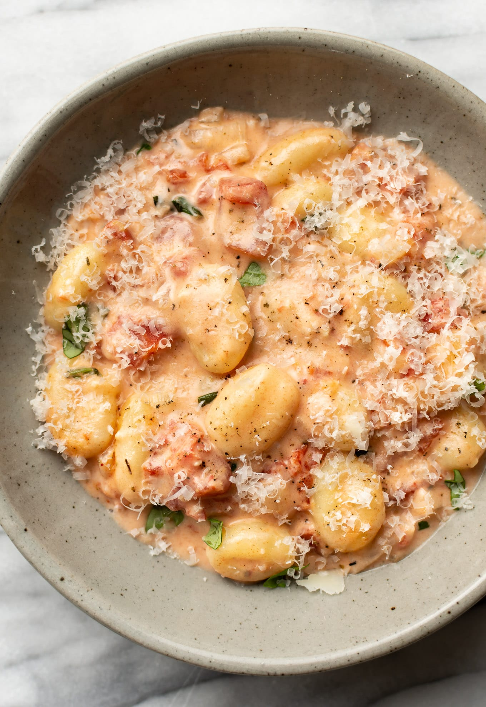

Back to Home
Creamy Tomato Gnocchi Recipe

Description
This one pan creamy tomato gnocchi recipe is easy comfort food at its best! It's convenient since it's ready in just 25 minutes, and you'll agree it's a restaurant quality dish.
Ingredients
- 1 tablespoon olive oil
- 1/2 medium onion chopped finely
- 1/4 cup dry white wine
- 1 tbsp Dijon mustard
- 3-4 cloves garlic minced
- 1/4 tsp dashes Italian seasoning
- 1 (14 fluid oz) can dices tomatoes with juices
- 1 cup heavy/whipping cream
- 1 lb uncooked potato gnocchi
- 1 small handful fresh basil torn or chopped
- Salt & pepper to taste
- Freshly grated parmesan cheese (optional) to taste
Steps
- Add the olive oil to a skillet on medium-high heat. Sauté the onion for about 5 minutes (ok if it's lightly browned).
- Add the white wine, Dijon mustard, garlic, and Italian seasoning. Stir until you've got a smooth mixture and let it cook for about a minute.
- Add the diced tomatoes, cream, and gnocchi. Wait until it starts to lightly bubble again, then reduce the heat to medium and cover for 5 minutes.
- Give it a good stir, and add the basil and season with salt & pepper. Let it cook for another couple minutes to ensure the gnocchi is fully cooked and the starch thickens the sauce up a bit more.
- Stir in parmesan (optional) or sprinkle it on top. Serve immediately.
Notes
The gnocchi will cook right in the sauce - no need to cook it beforehand.
This makes 4 reasonably sized portions. If you're feeding extra hungry people, I recommend serving this with a salad, garlic bread, and/or something else. It would also make a great side dish.